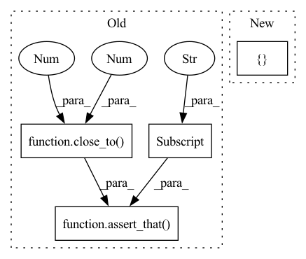

Pattern ID :37173

Before Change
r_row = result.value.loc[result.value["Metric"] == "r"].sort_values(by="Value", ascending=False).iloc[0]
// Assert
assert_that(result.value, has_length(8))
assert_that(p_row["Value"], close_to(.984, 0.001))
assert_that(r_row["Value"], close_to(0.988, 0.001))
def test_coco_best(coco_train_visiondata, coco_test_visiondata, mock_trained_yolov5_object_detection, device):
After Change
// Assert
assert_that(result.value, has_length(40))
assert_that(result.display, has_length(greater_than(0)))
assert_that(set(result.value["Metric"]), equal_to({"p", "r"}))
figure = t.cast(BaseFigure, result.display[0])
assert_that(figure, instance_of(BaseFigure))
In pattern: SUPERPATTERN
Frequency: 4
Non-data size: 4
Instances
Fragment ID: 107188051
Project Name: deepchecks/deepchecks
Commit Name: 7cf93ae88c161b880d42700dbaf8c190689b5b22
Time: 2022-06-29
Author: 71635444+yromanyshyn@users.noreply.github.com
File Name: tests/vision/checks/model_evaluation/class_performance_test.py
M Class Name: AnonimousClass
N Class Name: AnonimousClass
M Method Name: test_mnist_alt(4)
N Method Name: test_mnist_alt(4)
M Parent Class:
N Parent Class:
M File Name: tests/vision/checks/model_evaluation/class_performance_test.py
N File Name: tests/vision/checks/model_evaluation/class_performance_test.py
M Start Line: 114
M End Line: 121
N Start Line: 231
N End Line: 268
'>
Before Change
result = SpecialCharacters().run(dataframe)
// Assert
assert_that(result.value, has_length(1))
assert_that(result.value["col1"], close_to(1, 0.001))
assert_that(result.display[1].iloc[0]["Most Common Special-Only Samples"], has_items("!!!", "?!"))
def test_double_column_ignored_invalid():
After Change
// Act
result = SpecialCharacters().run(dataframe)
// Assert
assert_that(result.value, equal_to({"col1": 1, "col2": 0}))
assert_that(result.display[1].iloc[0]["Most Common Special-Only Samples"], has_items("!!!", "?!"))
'>
Fragment ID: 107188053
Project Name: deepchecks/deepchecks
Commit Name: ddc6c0edf7fe008a1cbe2cab9dbef92316cfdfee
Time: 2022-05-22
Author: matan@deepchecks.com
File Name: tests/tabular/checks/integrity/special_chars_test.py
M Class Name: AnonimousClass
N Class Name: AnonimousClass
M Method Name: test_double_column_one_invalid(0)
N Method Name: test_double_column_one_invalid(0)
M Parent Class:
N Parent Class:
M File Name: tests/tabular/checks/integrity/special_chars_test.py
N File Name: tests/tabular/checks/integrity/special_chars_test.py
M Start Line: 63
M End Line: 66
N Start Line: 63
N End Line: 63
'>
Before Change
// Assert
assert_that(result.value, has_length(2))
assert_that(result.value["col1"], close_to(0.25, 0.001))
assert_that(result.value["col2"], close_to(0.25, 0.001))
assert_that(result.display[1].loc["col1"]["Most Common Special-Only Samples"], has_items("{}"))
assert_that(result.display[1].loc["col2"]["Most Common Special-Only Samples"], has_items("&!"))
After Change
// Act
result = SpecialCharacters().run(dataframe)
// Assert
assert_that(result.value, equal_to({"col1": 0.25, "col2": 0.25}))
assert_that(result.display[1].loc["col1"]["Most Common Special-Only Samples"], has_items("{}"))
assert_that(result.display[1].loc["col2"]["Most Common Special-Only Samples"], has_items("&!"))
'>
Fragment ID: 107188043
Project Name: deepchecks/deepchecks
Commit Name: ddc6c0edf7fe008a1cbe2cab9dbef92316cfdfee
Time: 2022-05-22
Author: matan@deepchecks.com
File Name: tests/tabular/checks/integrity/special_chars_test.py
M Class Name: AnonimousClass
N Class Name: AnonimousClass
M Method Name: test_double_column_double_invalid(0)
N Method Name: test_double_column_double_invalid(0)
M Parent Class:
N Parent Class:
M File Name: tests/tabular/checks/integrity/special_chars_test.py
N File Name: tests/tabular/checks/integrity/special_chars_test.py
M Start Line: 107
M End Line: 111
N Start Line: 105
N End Line: 105
'>
Before Change
result = SpecialCharacters().run(dataframe)
// Assert
assert_that(result.value, has_length(1))
assert_that(result.value["col1"], close_to(0.25, 0.001))
assert_that(result.display[1].iloc[0]["Most Common Special-Only Samples"], has_items("//@$%"))
def test_single_column_multi_invalid():
After Change
// Act
result = SpecialCharacters().run(dataframe)
// Assert
assert_that(result.value, equal_to({"col1": 0.25}))
assert_that(result.display[1].iloc[0]["Most Common Special-Only Samples"], has_items("//@$%"))
'>
Fragment ID: 107188041
Project Name: deepchecks/deepchecks
Commit Name: ddc6c0edf7fe008a1cbe2cab9dbef92316cfdfee
Time: 2022-05-22
Author: matan@deepchecks.com
File Name: tests/tabular/checks/integrity/special_chars_test.py
M Class Name: AnonimousClass
N Class Name: AnonimousClass
M Method Name: test_single_column_invalid(0)
N Method Name: test_single_column_invalid(0)
M Parent Class:
N Parent Class:
M File Name: tests/tabular/checks/integrity/special_chars_test.py
N File Name: tests/tabular/checks/integrity/special_chars_test.py
M Start Line: 40
M End Line: 43
N Start Line: 42
N End Line: 42